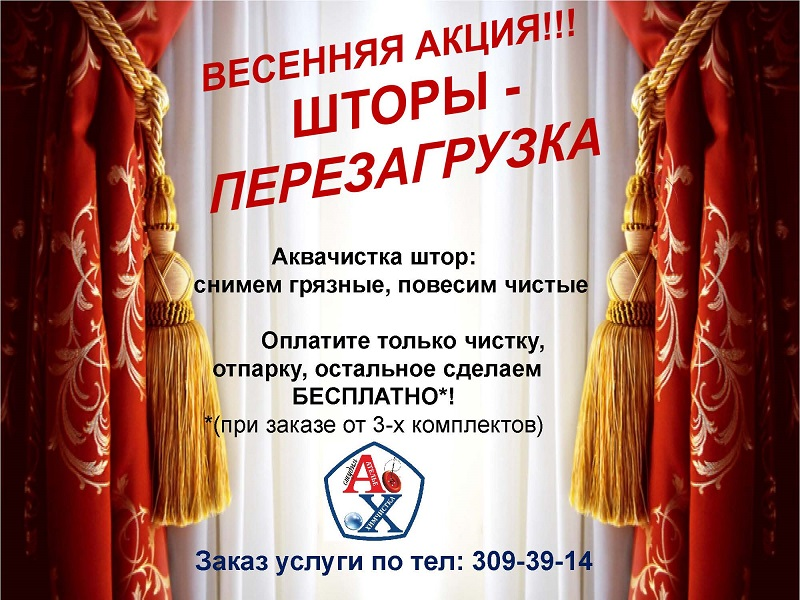

Химчистка портьер, штор, тюль

Зачем вам в доме это?
- Пыльные ламбрекены
- Пожелтевшая тюль
- Пятна на портьерах
- Неприятный запах
Весна – время обновления! Для наших клиентов всю весну услуга «Шторы-перезагрузка» - мы снимем и увезем в цех ваши пыльные шторы, занавеси, тюль, привезем и повесим их бесплатно. Вы оплачиваете только аквачистку одежды ваших окон, остальное сделаем мы. В каком бы районе Санкт-Петербурга и Ленинградской области, в Пригородах Вы не жили, Студия АХ приедет к Вам и бережно выполнит всю работу за Вас.
Мы справимся: с желтизной на тюли и пятнами. Избежим риска усадки штор. Удалим неприятный запах. И главное – обработка происходит гипаллергенными средствами, не содержащими фосфаты.
Cуществует множество способов чистки штор в домашних условиях, но ни один из них не даст такого эффекта, как специализированная химчистка или аквачистка штор в Колпино или в Пушкине. В первую очередь потому, что разные типы тканей и загрязнения на них требуют особого подхода. Не все виды штор переносят влагу, с осторожностью следует подбирать моющие вещества, дабы не повредить изделие и обеспечить высокую эффективность очистки. Особое внимание стоит уделять температурному режиму при стирке и отпарке, так как усадка – это наиболее частая проблема при домашней чистке штор.
Если вы опасаетесь повредить изделие, не хотите самостоятельно выполнять манипуляции по снятию, очистке и последующему развешиванию гардин, целесообразно обратиться за помощью к специалистам в Санкт-Петербурге и Ленинградской области. Специализированная Химчистка штор - в Студии АХ - в Колпино, Пушкине, Славянке, Шушарах, Павловске, Кировске может включать различные современные методы очистки, которые подбираются в зависимости от степени загрязнения и типа ткани, из которых они изготовлены.
Почему стоит обратиться именно к нам?
Профессиональная чистка позволяет вернуть первоначальный вид шторам, занавесям, портьерам, устранив даже сложновыводимые пятна.
Технологи нашей компании оценят состояние ваших штор, ткань из которых они изготовлены и подберут способ чистки индивидуально.
Наша химчистка оснащена современным оборудованием, которое бережно и деликатно производит очистку пятен независимо от их происхождения и срока давности.
Мы предоставляем заказчику гарантию качественно проделанной работы, включающей не только непосредственно чистку, но и съем изделия, транспортировку, сушку, глажку, а также последующее его развешивание.
Наша компания предоставляет услуги различных видов чистки штор. В случае если ткань не терпит стирки, мы производим сухую чистку штор в среде перхлорэтилена. Это вещество отлично справляется со всеми видами пятен.
В случае, когда контакт с водой не повредит изделию, но загрязнения не слишком сильны, мы осуществляем чистку методом Аквачистки. Такой способ обеспечивает наиболее деликатное и эффективное очищение ткани.
Специализированная химчитска штор – это идеальный способ продлить срок службы вашего изделия, обновить его, избавить от застарелых пятен и пыли, вернуть яркость красок и сияющую чистоту. Наши профессиональные сотрудники имеют большой опыт работы с самыми различными тканями, доверьте работу по очистке штор нам!
Почему химчистка штор на весу вредна? А рекламируется как идеальная? Как рекламируют химчистку штор на дому обманывая потребителя?
Вас будут убеждать воспользоваться услугами химчистки штор на дому так:
Ну во первых – это очень быстро!
Во вторых – чистка штор производится специальным составом на основе минерального спирта, позволяющим чистить деликатные (линяющие) ткани, а так же ткани, подверженные стиранию краски, так называемая сухая чистка, т.е. чистка жидкостями, не содержащими воды.
Ну и в третьих. Чистка штор на весу выгоднее ещё и в экономическом плане. Если снимать шторы, везти их на фабрику химчистку, где вся нагрузка ложится на вашу голову, снятие, транспортировка, томительное ожидание, а потом ещё такая химчистка штор на фабрике нередко стоит в несколько раз дороже химчистке штор на весу, а может и превысить стоимость самих штор.
НА САМОМ ДЕЛЕ ХИМЧИСТКА ШТОР НА ДОМУ ПОЖАРООПАСНА, НЕ ОЧИЩАЕТ ТКАНЬ ПО-НАСТОЯЩЕМУ И ВЫГОДНА ТОЛЬКО КЛИНИНГОВОЙ КОМПАНИИ